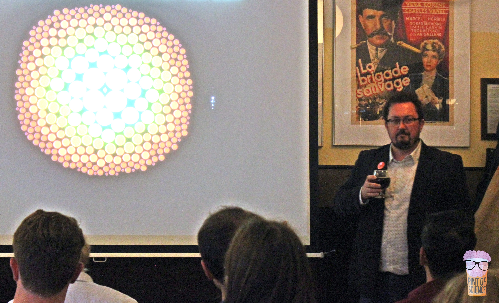

Talks and Outreach
Matthew Kenworthy talking at Pint of Science in Utrecht, May 2019. Photo by Raquel Ledo.I love to give talks about astronomy to all age groups, and if you're interested in me giving a talk to your school, astronomy club or an outreach event such as Astronomy on Tap or Pint of Science, please email me!
Here's my YouTube channel of public talks and lectures, some of which are highlighted below:
In previous years I've spoken at Science Cafe Wageningen (Oct 2017), several times at Cuba City Elementary, Middle and High Schools (in 2013, 2016 and finally one amazing day in 2018 where I spoke to six separate grades and the Lego Robot Club), and several other schools in Great Britain and the US. I was proud to give two talks at the Ewell Astronomical Society which I went to as a young astronomer, astronomy clubs in Arizona, and I prepared and gave star parties at the Double Check Ranch in Arizona. Other talks include at Pint of Science in Utrecht, May 2019, Astronomy on Tap Edinburgh, June 2019 and Space Lates at the National Science Centre in Leicester in October 2019.
I gave a talk at the Virtual Evenings Under the Stars in September 2021 on “Seeing the shadows of giant ring systems around exoplanets”:
I gave a talk at the Origins Seminar in May 2021 on “Looking for the transits of circumplantary disks”:
An AAVSO Webinar on “Shadows of Circumplanetary Disks: J1407 and J0600” in February 2021:
I gave a talk at Astronomy on Tap Leiden in September 2020:
I talked with Jo from the Cambridge Science Centre about how I became an astronomer:
I gave one of the talks at the very first Astronomy on Tap Leiden on “Finding seven Trappists outside the Solar System” in March 2017:
Last updated around November 2021.